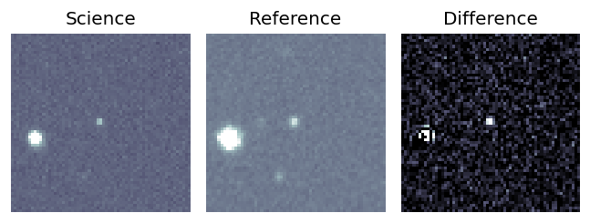
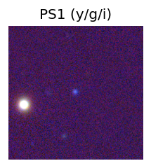
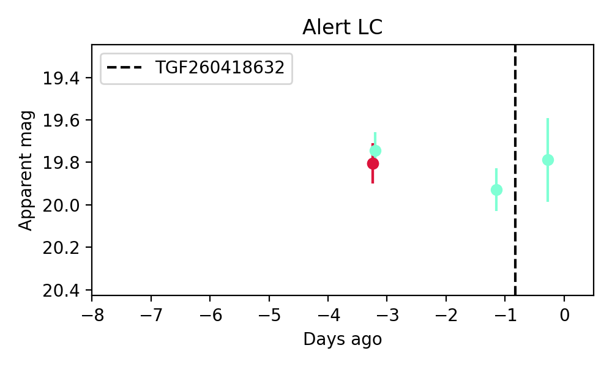
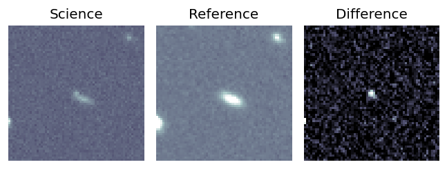
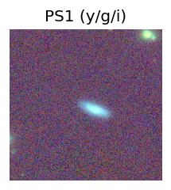
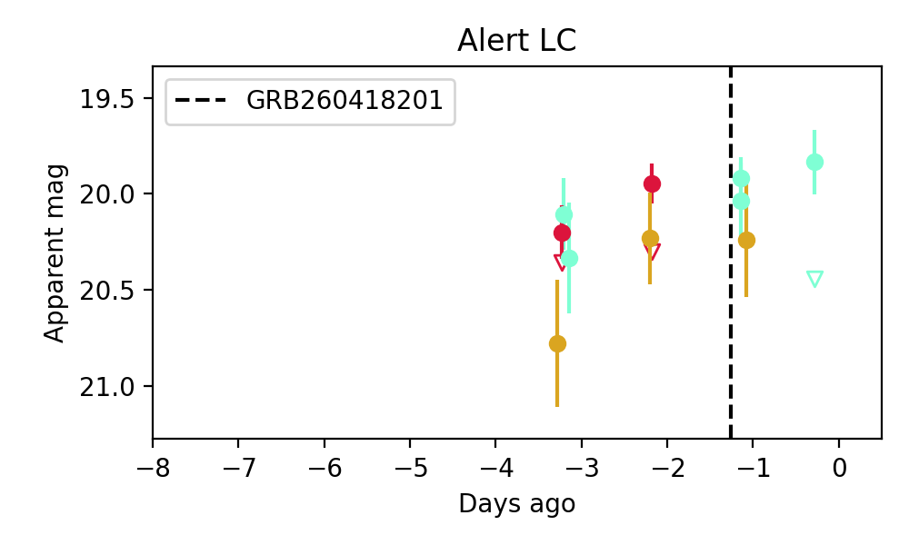

Candidate List 20260419 Previous Day Next Day Section 1: New Sources (age<1d) Cosmological Afterglow
Section 2: Old (1-5d) sources observed last night placeholder
Section 1: New Afterglow/FBOT Cands Last Night (0)
Section 2: Older Sources Observed Last Night (9)
0. ZTF26aaspjvp (Afterglow?) [Back to Top] [Share] [Trigger Swift] [Fritz ] [Lasair ]RA, Dec: 297.24031, 4.15287 19h48m57.67s, 4d 9m10.35sGalactic (l, b): 43.33696, -10.80347 ext(g-r) = 0.187PS1: 1 source in 3 arcsec Closest: d = 4.77 arcsec photoz=0.36+/-0.49 peak abs mag = -26.09
1. ZTF26aaspkec (FBOT?) [Back to Top] [Share] [Trigger Swift] [Fritz ] [Lasair ]RA, Dec: 298.01924, 5.89296 19h52m4.62s, 5d53m34.67sGalactic (l, b): 45.26921, -10.64341 ext(g-r) = 0.19PS1: 1 source in 3 arcsec Closest: d = 6.34 arcsec photoz=0.50+/-0.02 peak abs mag = -27.42
2. ZTF26aasubdy (FBOT?) [Back to Top] [Share] [Trigger Swift] [Fritz ] [Lasair ]RA, Dec: 141.1276, 11.38366 9h24m30.62s, 11d23m1.16sGalactic (l, b): 220.42174, 39.07703 WARNING: -3.65 deg from ecliptic plane ext(g-r) = 0.037peak abs mag = -24.63 LegacySurvey: 1 sources in 3 arcsec Closest: d = 0.11 arcsec, 183.9 deg (east of north) photoz=0.15 (68% bounds 0.09, 0.45), type=DEV peak abs mag = -19.89 (68% bounds -18.6, -22.6)
3. ZTF26aasulpk (FBOT?) [Back to Top] [Share] [Trigger Swift] [Fritz ] [Lasair ]RA, Dec: 131.66515, 80.78956 8h46m39.64s, 80d47m22.41sGalactic (l, b): 132.37423, 31.24805 ext(g-r) = 0.023LegacySurvey: 1 sources in 3 arcsec Closest: d = 0.73 arcsec, 108.9 deg (east of north) photoz=0.79 (68% bounds 0.69, 0.94), type=DEV peak abs mag = -24.84 (68% bounds -24.47, -25.29) Consistent with synchrotron, g-r>0!
4. ZTF26aasulvm (FBOT?) [Back to Top] [Share] [Trigger Swift] [Fritz ] [Lasair ]RA, Dec: 164.44836, 71.5443 10h57m47.61s, 71d32m39.50sGalactic (l, b): 134.79175, 42.87039 ext(g-r) = 0.05

LegacySurvey: 1 sources in 3 arcsec Closest: d = 0.34 arcsec, 107.0 deg (east of north) photoz=0.16 (68% bounds 0.09, 0.23), type=REX peak abs mag = -19.72 (68% bounds -18.47, -20.57) 
5. ZTF26aasvrfz (Afterglow?) [Back to Top] [Share] [Trigger Swift] [Fritz ] [Lasair ]RA, Dec: 162.70688, 16.56766 10h50m49.65s, 16d34m3.57sGalactic (l, b): 227.39023, 60.18525 ext(g-r) = 0.032

peak abs mag = -18.31 LegacySurvey: 1 sources in 3 arcsec Closest: d = 0.28 arcsec, 254.6 deg (east of north) photoz=0.08 (68% bounds 0.04, 0.33), type=DEV peak abs mag = -18.17 (68% bounds -16.41, -21.44) 
Consistent with synchrotron, g-r>0!
6. ZTF26aasvsgb (FBOT?) [Back to Top] [Share] [Trigger Swift] [Fritz ] [Lasair ]RA, Dec: 150.27578, 12.89376 10h 1m6.19s, 12d53m37.52sGalactic (l, b): 223.97052, 47.77541 WARNING: 0.71 deg from ecliptic plane ext(g-r) = 0.036peak abs mag = -23.88 LegacySurvey: 1 sources in 3 arcsec Closest: d = 1.05 arcsec, 206.2 deg (east of north) photoz=0.06 (68% bounds 0.05, 0.11), type=SER peak abs mag = -18.28 (68% bounds -17.69, -19.47)
7. ZTF26aatbvvn (Afterglow?) [Back to Top] [Share] [Trigger Swift] [Fritz ] [Lasair ]RA, Dec: 268.2875, 11.04177 17h53m9.00s, 11d 2m30.38sGalactic (l, b): 36.41723, 17.88481 ext(g-r) = 0.268
8. ZTF26aatdlls (FBOT?) [Back to Top] [Share] [Trigger Swift] [Fritz ] [Lasair ]RA, Dec: 175.03652, 27.66023 11h40m8.77s, 27d39m36.84sGalactic (l, b): 206.89549, 74.18045 ext(g-r) = 0.026peak abs mag = -17.11 LegacySurvey: 1 sources in 3 arcsec Closest: d = 2.81 arcsec, 225.0 deg (east of north) photoz=0.16 (68% bounds 0.04, 0.67), type=REX peak abs mag = -20.65 (68% bounds -17.5, -24.26) Consistent with synchrotron, g-r>0!